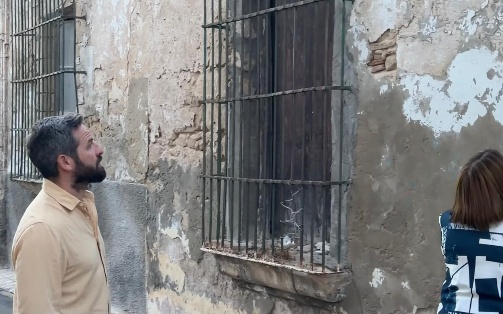

Beardo vota en contra de crear una Mesa de trabajo por la Vivienda
El Gobierno municipal tumba también la propuesta de crear una Mesa del Centro Histórico, rechazando dos iniciativas de 100x100 Unidos Portuenses para fomentar la participación ciudadana.
Leer noticia → JR
JR